117
UNIDADE 4 - CAPÍTULO 3
Capítulo 3 - Simetria
Em Portugal, a partir do século XVI, os azulejos passaram a ser usados como revestimentos para muros e paredes de casas e também serviam para decorar os ambientes.
![Painel retangular colorido, formado por azulejos quadrados. No centro, dentro de uma guirlanda oval, tem a imagem azulada do Chapeleiro Antônio Joaquim Carneiro, em uma postura elegante, de braços dados com sua esposa e com uma bengala na mão direita. O casal está acompanhado de cinco crianças. Eles estão em uma rua, em frente a uma grande fábrica, em Lisboa, Portugal. No topo da guirlanda, um pergaminho comprido, com as pontas enroladas, apresenta o título do painel: ODITO COMSUA MOLHER ESINCO ENTIADOS TRATANDO DESUA LOIE ENEGOSTO. Cesto de flores, folhagens verdes e arabescos adornam o entorno da guirlanda. Legenda da foto: Acervo do Museu Nacional do Azulejo. Painel da série histórica do Chapeleiro Antônio Joaquim Carneiro, 1790 - 1800. Real Fábrica de Louça, Lisboa, Portugal.](../../resources/images/unidade4/33.PNG)
1. Observe as imagens a seguir.
![Painel retangular, vertical, colorido, composto por 4 colunas e 6 linhas de azulejos quadrados de fundo verde. Cada peça de azulejo tem um gafanhoto pousado em uma espiga de trigo, posicionado na transversal, e ocupando toda extensão do azulejo. O painel mostra o gafanhoto em duas posições diferentes. Em uma peça de azulejo, a cauda do gafanhoto encosta no vértice superior esquerdo e a cabeça no vértice inferior direito, enquanto na outra peça, a cauda encosta no vértice superior direito e a cabeça no vértice inferior esquerdo. A simetria das imagens é formada pela união de quatro peças de azulejos. As peças unidas, aproximam cabeças e caudas dos gafanhotos, formando losangos. Legenda: Rafael Bordalo Pinheiro (1846 - 1905). Painel de padrão com gafanhotos. Barro modelado e vidrado em policromia, 88,5 x 50,5 cm. Museu Nacional do Azulejo, Lisboa, inv. nº. 185.](../../resources/images/unidade4/34.PNG)
► Troque ideias com um colega e expliquem por que os painéis acima apresentam simetria.

118
UNIDADE 4 - CAPÍTULO 3
É possível encontrar simetrias em diversos locais e sob as mais variadas formas. Ela nos dá a ideia de equilíbrio, proporção, harmonia, perfeição e beleza. Dizemos que uma figura é simétrica quando podemos dividi-la por uma reta, de forma que, ao dobrar essa figura sobre a reta, as duas partes se sobrepõem.
As retas que utilizamos para dividir as figuras são chamadas de eixos de simetria, sendo que algumas figuras apresentam mais de um eixo de simetria.
1 eixo de simetria.
2 eixos de simetria.
ENCONTRE SOLUÇÕES
1. Algumas letras do nosso alfabeto são simétricas, porém outras não.
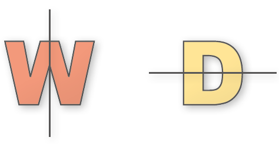a) Escreva, em seu caderno, mais quatro letras do nosso alfabeto que são simétricas e trace o seu eixo de simetria.
b) Quando uma imagem não apresenta simetria, ela é denominada assimétrica. Escreva, em seu caderno, quatro letras do nosso alfabeto que são assimétricas.
2. Em seu caderno, desenhe as representações a seguir e identifique quantos eixos de simetria cada figura apresenta.
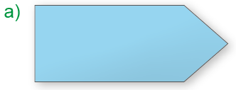 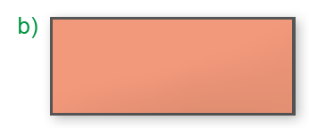 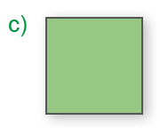 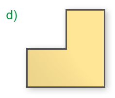119
UNIDADE 4 - CAPÍTULO 3
3. Observe a malha quadriculada abaixo que poderá ser reproduzida para construir o desenho a seguir. Complete o desenho, traçando a outra parte simétrica e depois pinte.
![Ilustração de uma malha quadriculada de 7 linhas e de 8 colunas, com quadradinhos de mesmo tamanho. Dentro dessa malha foram preenchidas figuras geométricas coloridas que formam a metade de uma tulipa estilizada. Na quarta coluna, da esquerda para a direita, foi preenchido, de vermelho, um paralelogramo que ocupa quatro quadradinhos na vertical, sendo essa a metade da flor. A partir da ponta inferior do paralelogramo foi desenhada de verde uma reta em cima do lado direito do quinto quadradinho, que é o caule. No final da reta, foi encaixado um triângulo retângulo, cujos lados ocupam dois quadradinhos para baixo e dois para a esquerda. Em cima do segundo quadradinho deste triângulo, na mesma linha da reta verde, foi preenchido um trapézio cuja base maior ocupa três quadradinhos e a base menor apenas um quadradinho. O triângulo e o trapézio formam a folha da tulipa.](../../resources/images/unidade4/43.PNG)
► O que a imagem representa?
4. Agora use a sua criatividade! Reproduza outra malha quadriculada, crie um desenho simétrico e trace o seu eixo de simetria. Depois, cole-o em seu caderno.
5. Com a dobradura podemos criar representações de seres ou objetos fazendo dobras geométricas em um pedaço de papel. Vamos agora construir uma flor coração! Siga os passos a seguir.
► 1.º passo: separe um papel colorido com o formato de um quadrado medindo 10 cm de lado.
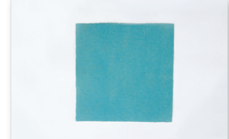► 2.º passo: dobre o papel na diagonal.
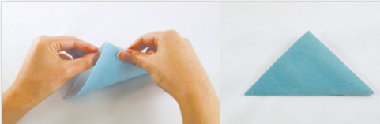► 3.º passo: dobre o papel como mostra a foto.
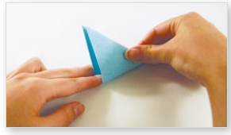► 4.º passo: dobre novamente o papel como mostra a foto.
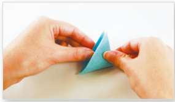► 5.º passo: agora, com o auxílio de uma tesoura, recorte fazendo uma curva para dar o contorno da metade de um coração. Observe:
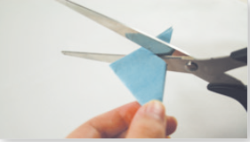► 6.º passo: agora é só abrir! Você já tem uma flor coração!
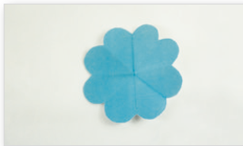